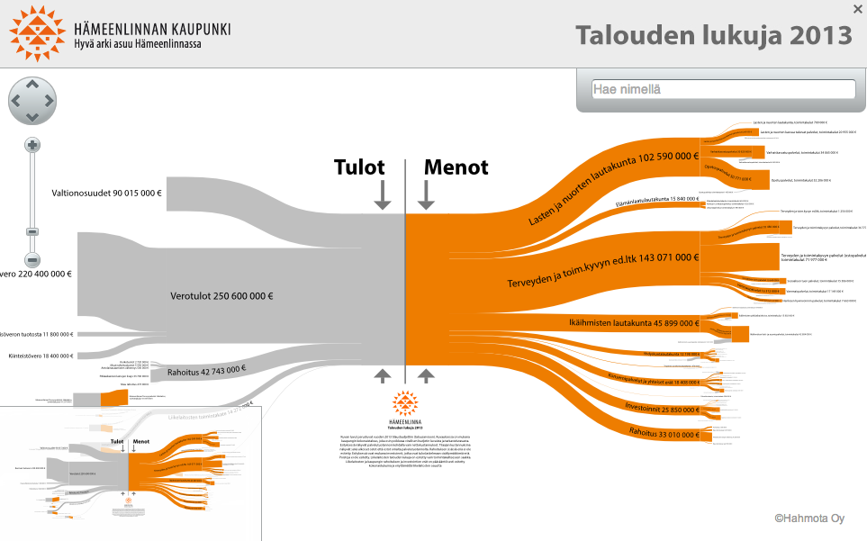

Teksti Terhi Upola Photos Olli-Pekka Orpo, Mobile World Congress 2013
The Apps4Finland contest awards prizes annually to the best mobile and computer applications which have been built using Finnish open data. Awards are also given for the most significant unlockings of data or simply for ideas which could make use of open data. There are separate categories for the best data visualisations and text- or video-based data guides that support the use of open data. The Apps4Finland contest has been held since 2009 and altogether 300 entries have participated. It was modelled after Washington DC’s Apps for Democracy contest, which had been launched earlier in 2009.
Hämeenlinna is the first city to make use of the Tax Tree visualisation. The grey roots of the tree represent the revenue, and the orange branches show the money spent. The thicker the branch, the bigger the cash flow. http://bit.ly/16OVPcQ
Apps4Finland was inspired by the example of Washington DC
Visiting Helsinki in spring 2009, the Washington DC-based start-up entrepreneur Peter Corbett gave a talk about the Apps for Democracy contest held in his home city. In that contest, the 20 000 dollar prize had served as an incentive for programmers to build applications making use of data the city had recently unlocked.
“The one-month competition produced 47 applications, whose total value is estimated as 2.3 million dollars”, said Corbett, the father of the idea.
”After his presentation, it was quite obvious that a similar competition should be organised in Finland as well”, recalls Pekka Koponen, Development Director of Forum Virium Helsinki. The idea to set up a competition already had been previously discussed among the research team of the Finnish SOMUS project which studied the utilisation of social media in the interaction between citizens and governance. Antti Poikola, one of the SOMUS researchers, took the lead to organise the competition.
The Finnish competition was launched in May 2009 under the name Apps for Democracy. The aim was to develop cost-free services based on interfaces to open public data. ”Considering that so little data existed at the time that could be used in the competition entries, the total of thirty entries was a positive surprise”, says Koponen.
The most memorable part of the competition process was the award ceremony at the Mindtrek media festival in Tampere. ”It was truly an inspirational occasion”. Many open data enthusiasts would meet other like-minded people there for the first time. The community started to grow. ”There was a buzz of excitement in the air. We felt, like, ‘let’s start a revolution and make this thing fly’”, Koponen recalls.
http://www.mindtrek.org/2009/democracy_finland
2009 WINNER OF IDEAS CATEGORY
Tax Tree visualises public spending
Architect Peter Tattersall had the idea that the revenues and expenditure of public organisations could be visualised with a tree metaphor when he was working on participatory city planning. There the purpose is to create possibilities for people to have their say on how the city works. In the case of Tax Tree, this is applied to participatory budgeting.
The Tax Tree visualisation provides an overall picture on the spending of a municipality, a city or a state. Tax Tree helps citizens – or decision-makers – get a better grasp of the public sector economy. Perhaps the greatest practical significance of Tax Tree is that politicians in municipalities have started using it as a tool. The Tax Tree visualisation helps grasp the dimensions of public expenditure. This can save the politicians the trouble of arm-wrestling for hours on end over marginal spending items.
In practice, the customer – for instance, a municipality – produces the data that it wants to be visualised as a Tax Tree and sends it as an Excel file to Tattersall’s firm Hahmota Ltd. Software created by the company then transforms the data into the visual form of a tree.
Not only municipalities use the application. The Ministry of Finance and the Evangelical Lutheran Church of Finland, among others, have also used it. Tattersall’s ambition is to create a version of the software that would be financially affordable also for small municipalities.
http://www.hahmota.com/veropuu.html
2010 WINNER OF THE APPLICATIONS CATEGORY
DataSuomi searches open knowledge
The directory of semantic knowledge DataSuomi
(DataFinland), developed by the Semantic Computing
Research Group (SeCo) of the Aalto University, walked
away with the main prize of the 2010 contest. DataSuomi
publishes and offers the metadata of data reserves for
other web services to utilise through an interface. A search
engine can be used to seek for open data reserves
published online by their semantic description such as
content, publisher, language, format and licensing.
2011 winner of the Applications category
Parkman knows what your parking costs
Imagine you are at the hospital to visit your grandma. She is in a talkative mood and you have left your car on a paying parking lot. After a while you will have to either run outside to add coins to the meter or just risk getting a ticket. But if you were using the Parkman virtual parking meter app, you could top up the payment by just clicking on your phone.
The story above is a real-life situation and also the best feedback that the developer of Parkman, Matias Lindroos, has received. Parkman allows the user to pay for parking by clicking on an icon on the mobile phone. The application knows the price of the parking according to the location. In addition to GPS geodata, the application makes use of the different parking payment zones from the cities’ parking map data. The traffic wardens can check the payment in real time on their portable terminals.
The application came into being a couple of years ago when Lindroos himself needed to pay for his parking but the text-message based mobile applications available at the time seemed to him somewhat clumsy. At the same time, smartphones with GPS locators were becoming increasingly common.
The application was at first in commission only in Helsinki but at present it is in use in 11 cities in Finland, Sweden and Denmark. Lindroos’ company Neligrate with its partners is constantly mapping the possibilities of expanding into other countries and cities. The aim is to surpass 100,000 users by the end of 2013.
According to Lindroos’ figures the Parkman application could save up to 2.5 million euro a year in Helsinki alone, mostly in maintenance costs of parking meters. The calculation is based on the assumption that, one day, all parking could be paid with mobile devices.
2011 winner of the Helsingin Sanomat special award for datajournalism
Verokuitti shows you where your tax money goes
Prior to the 2011 parliamentary election Pär Österlund and his friends begun to think during a lunch break how big an effect sentiments actually have on the way people vote.
The conclusion: ”Everyone should receive a receipt, delivered to their home door, telling how the government is spending their tax payments”.
Instead of a paper receipt, Österlund, Kari Silvennoinen and Jon Haglund developed a web application. As you type in your own salary, the application will let you know what proportion of your taxes are spent, for instance, on parliamentary expenses or military defence.
The open data utilised by the application is derived from the budgets published by the Ministry of Finance and are updated into the application once a year. Additional information includes statistics from Statistics Finland and Eurostat to estimate the cost of living and savings, data from the National institute for Health and Welfare on alcohol consumption, as well as various data published by the Finnish Transport Safety Agency and Finnish Customs.
http://www.verokuitti.fi/
THE WINNER OF APPLICATION SERIES 2012
BlindSquare tells visually impaired users where the nearest restaurant is
Ilkka Pirttimaa developed his BlindSquare application in a reverse order. He did not have the end user in mind when started. Instead he was pondering what could be developed by putting together the existing open data reserves and the new features of smartphones.
Pirttimaa’s idea was to combine the geodata of Foursquare and Open Street Map with the possibilities offered by smartphones’ speech synthesis functions – and this was before he had met a single visually impaired person.
Pirttimaa then made himself familiar with the daily lives of the visually impaired by reading some blogs they kept. Currently, about twenty visually impaired persons around the world are testing the beta version of the application.
Thanks to its global data sources, the BlindSquare application can be used anywhere and it has users in over 50 countries. In Helsinki the application makes use of the city’s service map and Helsinki Region Tranport’s Information on Traffic Exceptions, in addition to Foursquare and Open Street Map. Through the service map, the application receives information on the accessibility of libraries, for example. Other cities are gradually starting to follow Helsinki’s example in using local public data.
Pirttimaa has received so many of ideas from beta testers and other BlindSquare users for the development of the service that over 50 new features have been added to the service in six months, based on the feedback. The users also chose the name for the application.
The application has also helped the visually impaired, for instance, to find the right classroom on a campus or to spot the water slide they are looking for in a water park.
Perhaps the most impressive feedback Pirttimaa has received was from a Canadian user telling they can now go somewhere on their own for the first time in 64 years.
”Everyone should receive a receipt, delivered to their home door, telling how the government is spending their tax payments.
Ilkka Pirttimaa’s BlindSquare application received a Global
Mobile Award as the Best Health Product or Service at the
Mobile World Congress in Barcelona in February 2013.
- •
The texts of the publication are licensed under the 'HRI-nimeä' attribution. All reuse of the material must be accompanied by the name of the author (Petja Partanen or Terhi Upola) and the publisher (Helsinki Region Infoshare).

Apps4Finland 2011
140 entries, 4 categories: Best idea, Best application, Best visualisation and Best data opening. ”The success of the competition is an indication of the progress of open data in Finland, not just among developers but also officials unlocking the data”, said the chairman of the jury Jyrki Kasvi at the awards ceremony.
2011 was a breakthrough year. A record
140 entries, and a full house at the award ceremony in the Old Student House.
http://apps4finland.fi/tapahtumat/paatostilaisuus-2012/gaala-ja-voittajat-2011/
Apps4Finland 2012
120 entries, 5 categories: Best application, Best idea, Best data opening, Best visualization and Best data guide. The entries dealt with topics including the monitoring of energy consumption and air pollution, mobility in the city and in nature, and municipal elections. The absolute audience favourite was the “Karttapullautin” app, making maps for orienteering from National Land Survey’s open map data.
”Open data is becoming part of the basic functions of the government agencies. We have made a U-turn in the sense that we no longer jealously guard our data but have adopted a new approach where public-sector data sets are actively offered for use by anyone. The Apps4Finland contest is doing an important pioneering work which will open many people’s eyes to the benefits of open knowledge”, said Minister of Housing and Communications Krista Kiuru at the award ceremony.
http://apps4finland.fi/kilpailutyot/kilpailutyot-2012/voittajat/
Apps4Finland 2010
30 entries, 3 categories: Best idea, Best implementation (Enterprises), Best implementation (Private actors)
http://apps4finland.fi/arkisto-2010/palkitut/
During 2012, the ideas of open data
won more ground also within the state
administration. ”An astonishing amount of
progress has taken place in one year. The
Ministry of Finance says the government
should unlock data; ministers talk about it;
and the state administration is mapping the
data reserves that could be opened”, says
HRI’s Project Manager Ville Meloni in an
interview by StadiTV.
1. The Suomi.fi – online service provides, for instance, the Euribor rates and currency exchange rates.
2. The Parkman-app remembers where you parked
your car and will guide you back to it
3. The Verokuitti.fi – application tells you how the society spends your income tax.